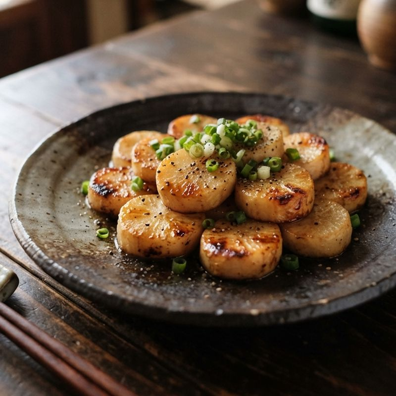
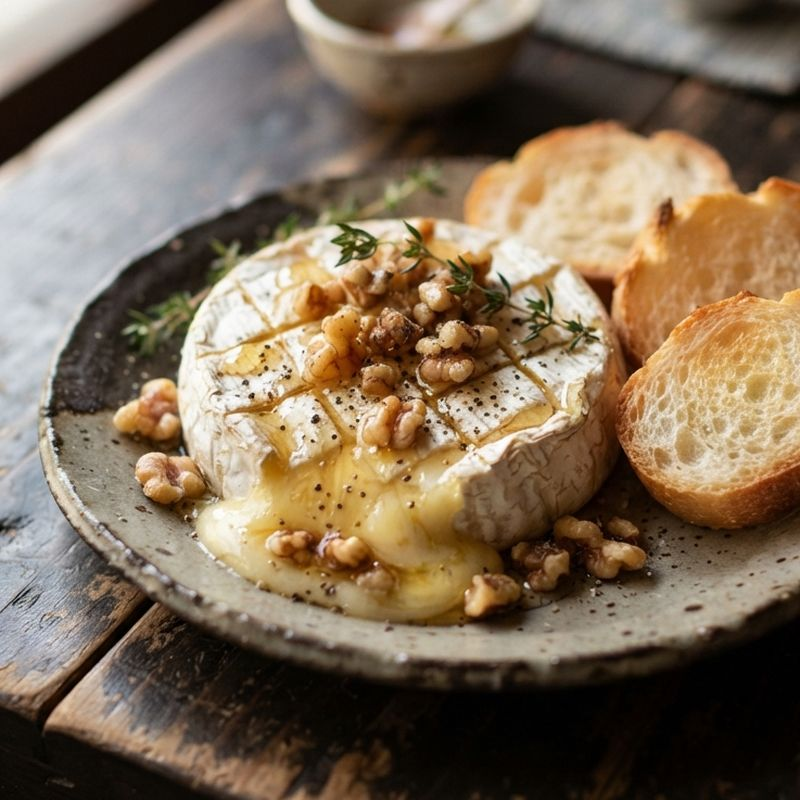
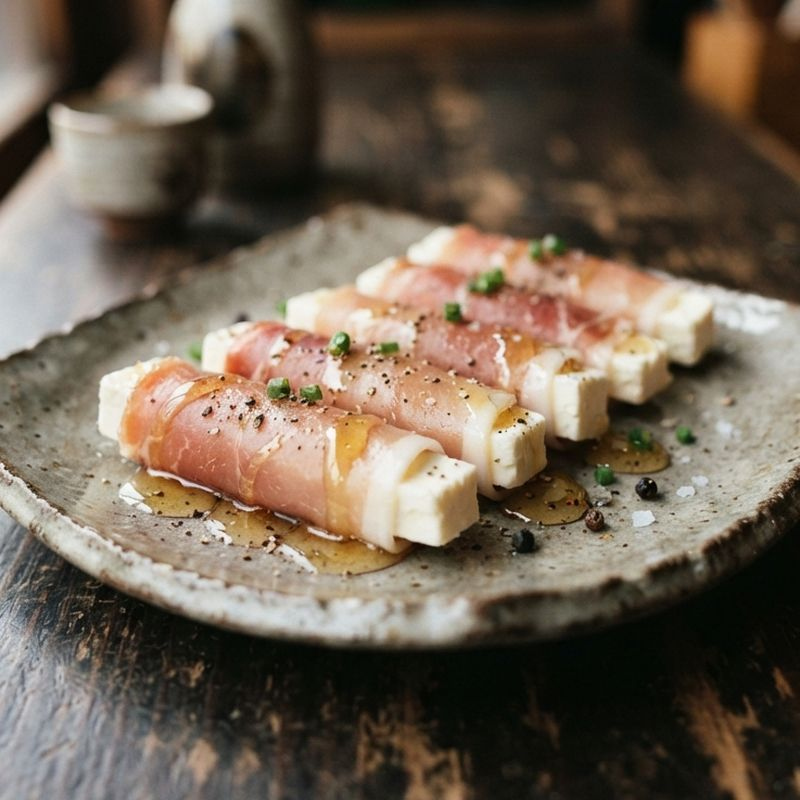
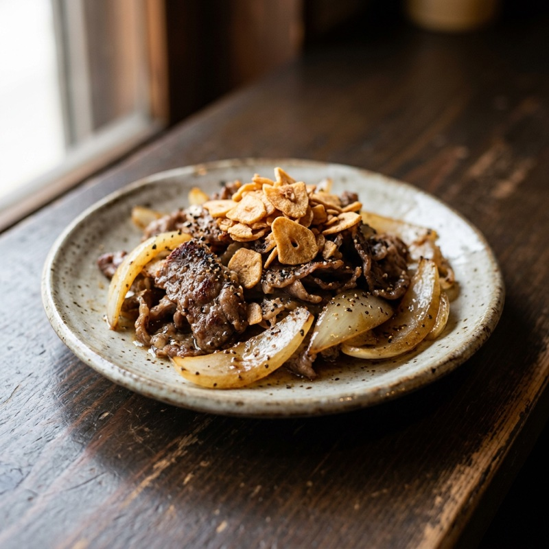
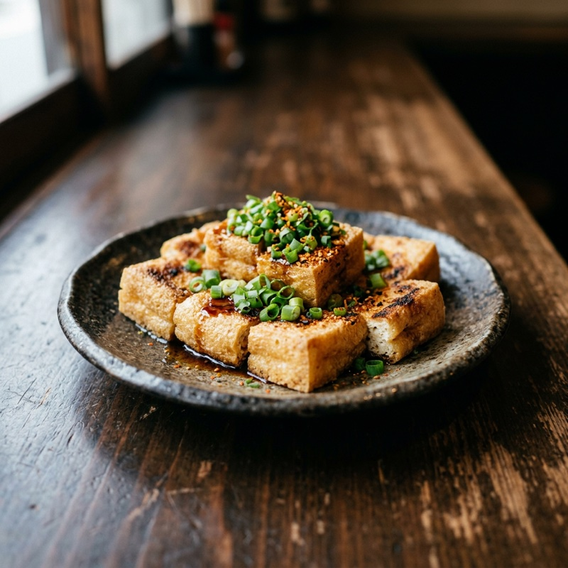

今夜のお酒に合わせて、ちょうどいいつまみを。
今日の一品
Instagramのリールから
お酒からさがす


作り方からさがす

食材からさがす


お知らせ
お知らせ利用規約プライバシーポリシーお問い合わせ
飲みすぎに注意しましょう。飲酒運転は法律で禁止されています。
今夜のお酒は？
利用規約プライバシーポリシーお問い合わせ
次に保存を見るときは、もう一度ログインが必要です。
アプリのように、ホーム画面のアイコンからすぐ開けます。
 ビール
ビール ハイボール
ハイボール レモンサワー
レモンサワー 焼酎
焼酎 火を使わない
火を使わない レンジだけ
レンジだけ フライパンひとつ
フライパンひとつ チーズ
チーズ 玉ねぎ
玉ねぎ 卵
卵 鶏肉
鶏肉 豚肉
豚肉 ベーコン
ベーコン ハム・生ハム
ハム・生ハム トマト
トマト きのこ
きのこ 豆腐
豆腐 ピーマン
ピーマン キャベツ
キャベツ きゅうり
きゅうり じゃがいも
じゃがいも にんじん
にんじん 大根
大根 えび
えび ちくわ・練り物
ちくわ・練り物 ツナ・サバ缶
ツナ・サバ缶